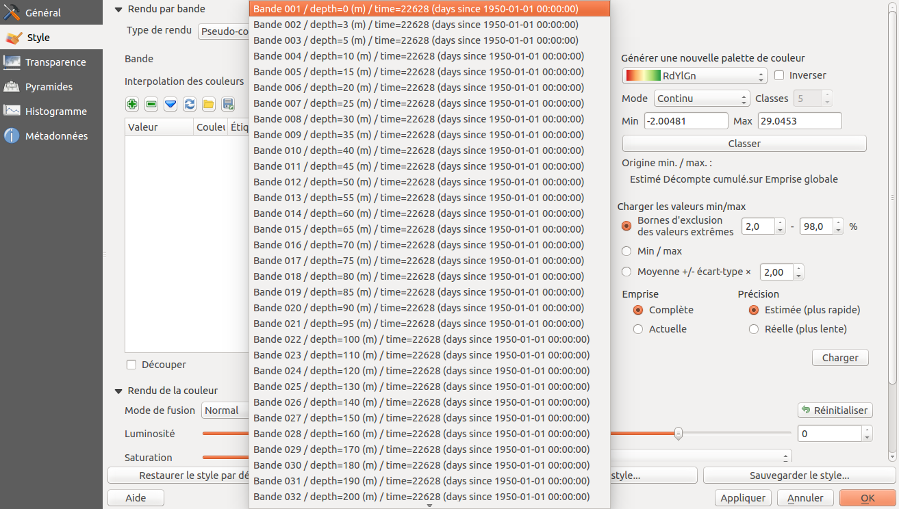
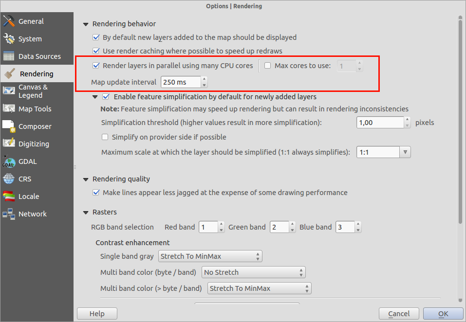
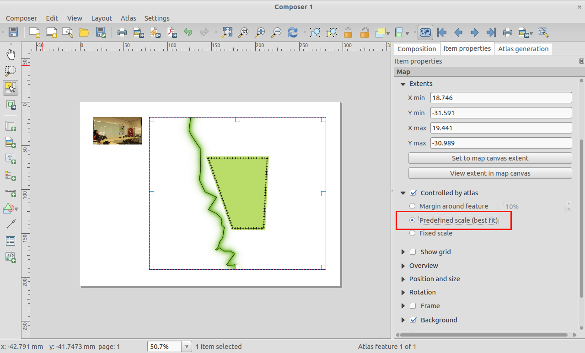
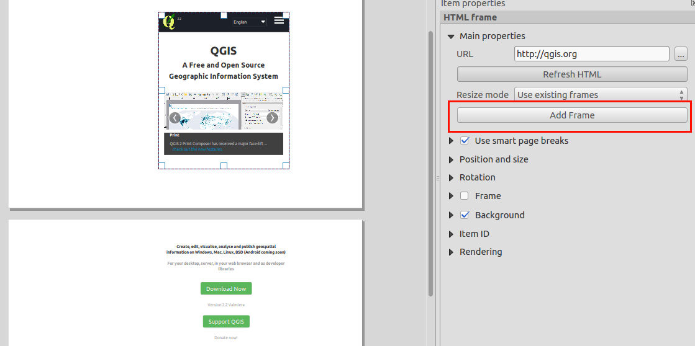

Modifications apportées par QGIS 2.4¶
Liste des changements dans la version QGIS 2.4.0. Une attention particulière a été portée sur les performances et l’affinage, nous avons rajouté de nombreuses fonctionnalités et améliorations pour rendre l’interface plus cohérente et professionnelle (et nous l’espérons, plus simple à utiliser). Le composeur de cartes (utilisé pour l’impression) a été l’objet de beaucoup d’efforts pour en faire un outil plus adapté à la création de superbes sorties cartographiques.
A chaque fois que de nouvelles fonctionnalités sont ajoutées au logiciel, elles introduisent potentiellement de nouveaux bugs. Donc, si vous avez des problèmes avec cette version, reportez-les en utilisant le système de suivi de bugs de QGIS.
Nous souhaitons remercier tous les développeurs, rédacteurs, testeurs et les nombreuses personnes qui ont donné volontairement de leur temps (ou financé des personnes pour le faire).
From the QGIS community we hope you enjoy this release! If you wish to donate time, money or otherwise get involved in making QGIS more awesome, please wander along to qgis.org and lend a hand!
Enfin nous souhaitons remercier nos sponsors officiels pour les soutiens financiers inestimables à ce projet :
- Sponsor GOLD : Asia Air Survey, Japan
- Sponsor SILVER : G.A.I.A. mbH, Germany
- Sponsor SILVER : State of Vorarlberg, Austria
- Sponsor BRONZE : www.molitec.it, Italy
- Sponsor BRONZE : www.argusoft.de, Germany
- Sponsor BRONZE : www.openrunner.com, France
- Sponsor BRONZE : www.eschenlaub.de, Germany
A current list of donors who have made financial contributions large and small to the project can be seen on our donors list.
If you would like to make a donation or sponsor our project, please visit our sponsorship page for details. QGIS is Free software and you are under no obligation to do so. Sponsoring QGIS helps us to fund our six monthly developer meetings, maintain project infrastructure and fund bug fixing efforts.
- Général
- Fonctionnalité: Génère le nom d’une bande avec la variable NetCDF EXTRA_DIM
- Fonctionnalité: Application d’une échelle et d’un décalage pour les données raster
- Fonctionnalité: Barre d’accès rapide de calcul de champs dans la table d’attributs
- Fonctionnalité: Modes de prévisualisation de couleur dans le canevas de cartes et le composeur
- Fonctionnalité: Fichiers de couche QLR pour QGIS
- Fonctionnalité: Nouvelles fonctions dans le générateur d’expressions
- Fonctionnalité : Copier, coller et glisser-déposer des couleurs
- Fonctionnalité: Rendu graphique Multi-fils d’exécution
- Étiquetage
- Composeur de cartes
- Extensions
- Style
Général¶
Fonctionnalité: Génère le nom d’une bande avec la variable NetCDF EXTRA_DIM¶
NetCDF a fourni des informations extra-dimensionnelles. Cette information fournit des métadonnées sur chaque bande. Ces métadonnées peuvent être utilisée pour expliciter le nom de chaque bande. Par exemple, les bandes d’un fichier NetCDF représentant la température à une profondeur donnée. Pour l’utilisateur, il est plus facile de sélectionner une bande avec l’information de profondeur plutôt que d’utiliser uniquement le numéro de bande.

Fonctionnalité: Application d’une échelle et d’un décalage pour les données raster¶
Pour certaines sources de données raster, les données sont stockées sous forme d’entier avec une échelle et un décalage dans les métadonnées. L’échelle et le décalage peuvent être utilisés pour récupérer les bonnes valeurs. QGIS les applique aux données raster pour afficher l’information juste dans les légendes, les histogrammes et pour l’identification.
Fonctionnalité: Barre d’accès rapide de calcul de champs dans la table d’attributs¶
Nous avons une nouvelle fonctionnalité intéressante pour ceux qui travaillent avec les champs calculés des tables d’attributs des couches vecteur. La nouvelle barre d’accès rapide de calcul vous permet de mettre à jour des valeurs dans une colonne de la table d’attributs de manière facile et rapide.

Fonctionnalité: Modes de prévisualisation de couleur dans le canevas de cartes et le composeur¶
La prévisualisation du rendu simulé pour daltoniens ou en niveaux de gris est une réelle innovation. Cela permet de visualiser comment des daltoniens percevrons vos cartes et mises en page, ou comment ces cartes sortirait en impression en niveaux de gris. Vous pouvez lire davantage d’information sur cette fonctionnalité ici.

Fonctionnalité: Fichiers de couche QLR pour QGIS¶
Nouvelle fonctionnalité pour les fichiers QGIS de définition de couche (QGIS Layer Definition - QLR, voir http://nathanw.net/2014/03/12/qgis-qlr/). Ce fichier .qlr est un fichier pointant vers une source de données, et contenant les informations de style ainsi que d’autres informations. Vous pouvez ajouter ce fichier en tant que source de données, et le fichier fait le reste. QLR permet d’ajouter facilement la même couche à plusieurs documents cartographiques, en encapsulant toutes les propriétés définies. QLR fonctionne avec tout type de données dans QGIS, y compris les couches spécifiques crées par les extensions.
Fonctionnalité: Nouvelles fonctions dans le générateur d’expressions¶
Nous avons de nouvelles fonctions disponibles dans le constructeur de requêtes
- rectangle d’emprise (bounds)
- Largeur & hauteur du rectangle d’emprise (bounds_width/bounds_height)
- coordonnées x/y min/max (xmin/xmax/ymin/ymax)
- La nouvelle fonction wordwrap renvoie une chaîne avec un retour chariot, suivant un nombre minimum ou maximum de caractères

Fonctionnalité : Copier, coller et glisser-déposer des couleurs¶
Il est désormais possible de copier, glisser-déposer des couleurs entre n’importe quel outil de saisie de couleur de QGIS. Consultez cet article pour plus d’information sur le fonctionnement exact de cette nouvelle fonctionnalité. Il est également possible de copier-coller des codes RGB ou hexadécimaux vers ces boutons de saisie de couleur, ce qui permet d’importer des couleurs depuis un autre outil que QGIS.

Fonctionnalité: Rendu graphique Multi-fils d’exécution¶
Voilà une fonctionnalité à laquelle on ne peut rendre justice par une simple capture d’écran. QGIS gère maintenant l’affichage multi-fils d’exécution ! Cela signifie que lorsque QGIS dessine une carte, le travail va être réparti entre les coeurs de votre processeur, rendant cette tâche plus efficace et réactive. Réactive, parce que vous n’avez plus besoin d’attendre que la carte soit entièrement affichée pour zoomer ou déplacer de nouveau la carte. L’affichage se rafraichit également au fur et à mesure, ce qui permet d’ajuster la carte avant la fin complète de l’affichage. Jetez un oeil à cet article pour un tour plus détaillé sur le système de rendu multi-processeur. Les options relatives à cette fonctionnalité sont présente dans la boite de dialogue des préférences générales de QGIS.

Étiquetage¶
Fonctionnalité : Étiqueter plusieurs fois une même entité¶
Les lignes (telles que les lignes de niveaux ou les routes) peuvent maintenant être étiquetées de manière répétitive à intervalles de distance définis. Il est possible de choisir cette distance de répétition en mm écran ou en unités terrain. Au moment de la publication de la version 2.4, il reste encore un problème lors de l’utilisation de l’option « fusionner les lignes connectées pour éviter la duplication d’étiquettes ».

Composeur de cartes¶
Fonctionnalité: Améliorations des éléments d’image du composeur¶
Les éléments d’image du composeur prennent maintenant en compte l’atlas: vous pouvez utiliser une expression pour définir quelle image sera affichée pour chaque page de l’atlas. Vous pouvez également définir le mode de redimensionnement (zoomer, couper, étendre, etc.) de l’image en fonction de la taille de son cadre et de ses dimensions. Vous pouvez aussi indiquer l’emplacement de l’image relativement à son cadre en utilisant la nouvelle propriété placement.

Fonctionnalité: Echelles prédéfinies pour les cartes d’atlas¶
Lorsque vous travaillez sur des éléments d’atlas de cartes, vous pouvez maintenant indiquer un mode d’échelles prédéfinies pour la carte. Ce mode utilisera la meilleure option d’ajustement à partir d’une liste prédéfinie d’échelles dans les propriétés du projet (consultez Projet -> Propriétés -> Général -> Échelles du projet pour les configurer).

Fonctionnalité: Améliorations des tables attributaires dans le composeur¶
Nous avons réalisé quelques améliorations sur l’affichage des tableaux dans la présentation des compositions:
- Ajout de la gestion de l’ordre des colonnes au sein du tableau
- Ajout de la gestion des colonnes basées sur une expression
- Vous pouvez maintenant définir un alignement différent pour chacune des colonnes de la table ainsi qu’un alignement particulier pour les cellules de la ligne d’en-tête.
- Le contenu de la table peut être filtré à l’aide d’une expression

Fonctionnalité : Amélioration générale du composeur¶
Il existe quelques ajouts au composeur de cartes pour rendre la vie plus facile lorsqu’on travaille à la composition de cartes:
- Ajout d’un bouton pour visualiser l’emprise de l’élément de carte courant dans le canevas de carte.
- Possibilité d’exporter des images SVG avec des coches depuis le composeur
- Gestion du mode de jointure de ligne et du style de croisement pour les barres d’échelle
- Gestion du type de jointure de ligne pour les éléments de cadre

Fonctionnalité: Amélioration des cadres HTML¶
Les cadres HTML du composeur ont été améliorés. Il existe un nouveau bouton Ajouter un cadre qui peut être utilisé pour créer manuellement de multiples cadres HTML liés. Nous avons également amélioré la logique de césure de page pour limiter les coupures au milieu des lignes de texte lors de la pagination des cadres HTML.

Extensions¶
Fonctionnalité: Extension de client de catalogue MetaSearch¶
MetaSearch est une extension QGIS permettant d’interagir avec des services de catalogage de données. MetaSearch supporte le standard OGC Catalogue Service for the Web (CSW). Cette extension fournit une interface d’approche simple et intuitive pour effectuer des recherches dans les catalogues de métadonnées au sein de QGIS. Elle est maintenant fournie par défaut avec l’installation générale de QGIS.

Style¶
Fonctionnalité: Remplissage dégradé suivant la forme¶
Nous avons un nouveau rendu intéressant dans QGIS 2.4. Le rendu par remplissage dégradé selon la forme vous permet de remplir les polygones avec un gradient s’étendant du contour du polygone vers son centre. Vous pouvez en lire davantage sur le remplissage dégradé selon la forme ici.

Fonctionnalité: Option pour décaler l’emplacement des marqueurs de ligne¶
Lorsque vous utilisez une ligne de marqueurs le long d’une ligne ou d’un arc de polygone, vous pouvez maintenant indiquer un décalage de manière à ce que la ligne de marqueurs démarre à une distance donnée du début de la ligne. Si la ligne de marqueurs est paramétrée à « premier sommet » ou à « dernier sommet » alors ce décalage contrôlera à quelle distance du sommet le marqueur est placé.

Fonctionnalité: Nouveau rendu par polygone inversé¶
Un nouveau rendu a été ajouté pour les éléments polygones qui permet de styler tout ce qui est à l”extérieur de vos polygones. Cela peut être utile pour mettre en valeur des emplacements ou pour créer des masques cartographiques. Combiné au nouveau style de remplissage dégradé selon la forme, vous pouvez maintenant produire des cartes comme celle présentée ci-après.
Note: La nouvelle version de l’extension mask facilite la création de couche de masque à partir de la sélection courante, permet l’étiquettage des entités présentes uniquement dans ces zones et génère automatiquement un masque dans les cartes générées par l’atlas.

Fonctionnalité: Sauvegarder et récupérer les styles des couches Spatialite¶
Dans la version précédente de QGIS, il était possible d’enregistrer les styles pour les couches PostgreSQL. Il est maintenant possible de le faire pour les couches Spatialite également. Ces fonctions vous permettent d’intégrer plusieurs styles à l’intérieur d’un conteneur Spatialite permettant de simplifier le partage des données et leur présentation. Vous pouvez retrouver une vidéo de tutoriel de cette fonctionnalité ici: http://pvanb.wordpress.com/2014/05/15/saving-layer-styles-to-your-spatialite-database/